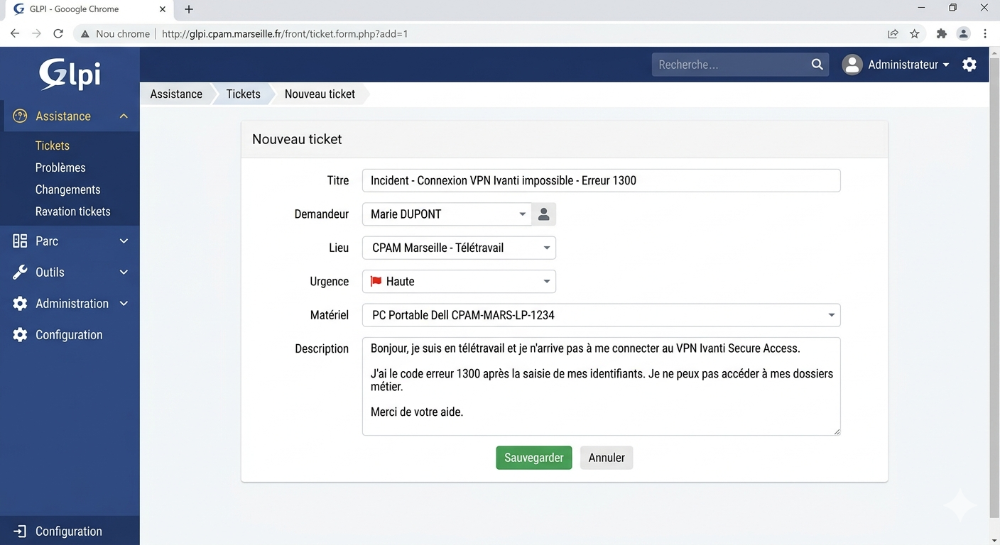
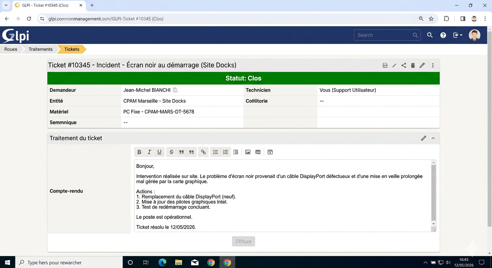

Situation : À la CPAM 13, les tickets arrivent en continu via GLPI. Chaque incident est horodaté avec un identifiant unique. Mon rôle est de qualifier, prioriser et résoudre les incidents le plus rapidement possible - d'abord à distance via WAPT, et si nécessaire en me déplaçant sur site. L'objectif est d'assurer la continuité de service des agents de l'Assurance Maladie.
Partie 1 - Réception et qualification d'un ticket
1
Identifier le ticket dans GLPI
Dès qu'un ticket arrive, je vérifie les 3 informations essentielles : le nom de l'agent et son service, le nom du poste si indiqué, et la description du problème remonté. Ces informations me permettent de savoir immédiatement de quoi il s'agit et qui est concerné avant de faire quoi que ce soit.

GLPI - vue d'un ticket à la réception avec les informations de l'agent et la description
2
Analyser la criticité : Impact × Urgence
Chaque incident est évalué selon deux critères combinés pour décider de l'ordre de traitement. Un incident avec un fort impact et une forte urgence passe en priorité absolue.
Grille de priorisation Impact × Urgence
3
Qualifier la nature de la panne
Avant d'agir, je qualifie le type de panne pour savoir quel matériel emporter si je dois me déplacer, et pour choisir la bonne approche de résolution.
Les 3 types de pannes à identifier avant d'intervenir
Partie 2 - Diagnostic et résolution
4
Diagnostic par couches - modèle OSI
Avant toute intervention, je suis une méthode structurée pour identifier l'origine du problème couche par couche. Cela évite de partir dans la mauvaise direction et de perdre du temps.
Méthode de diagnostic par couches OSI
5
Prise en main à distance via WAPT
Avant tout déplacement, j'essaie de résoudre à distance via WAPT. Après accord de l'agent, je prends le contrôle de son poste et j'interviens directement. Cela évite un déplacement inutile et accélère la résolution. Pour le détail complet du fonctionnement de WAPT, voir la page dédiée.
Flux de résolution à distance avant tout déplacement - voir la page WAPT pour le détail
6
Incidents fréquents et procédures
Voici les 4 types d'incidents les plus courants que je traite au quotidien, avec la procédure associée à chaque fois.
Compte AD verrouillé
Ouvrir la console Active Directory Users and Computers
Localiser l'utilisateur par son nom
Onglet "Account" → cocher "Unlock account"
Si carte agent bloquée → lecteur externe + logiciel dédié → code temporaire
Vérifier que l'agent ouvre bien sa session
Application métier en erreur
Message d'erreur → différence de version entre client et serveur
Via WAPT : déploiement de la nouvelle version
Si conflit → désinstallation manuelle de l'ancienne version
Réinstallation propre via WAPT
Test de démarrage de l'application
VPN télétravail défaillant
Agent à domicile → impossible de prendre la main → mot de passe temporaire attribué
Agent sur site → prise en main WAPT
Mot de passe oublié → réattribution du compte VPN
Client VPN obsolète → désinstall + réinstall via WAPT
Heure désynchronisée → changement pile CMOS + recalibration BIOS
Remplacement de poste défectueux
Prévenir l'agent de la durée d'indisponibilité
Sauvegarde des données locales sur disque dur externe
Branchement du poste de remplacement
Jonction au domaine Active Directory
Déploiement des logiciels métiers via WAPT
Validation par l'agent avant de clôturer
Partie 3 - Clôture et traçabilité
7
Rédiger le compte-rendu et clôturer dans GLPI
La clôture d'un ticket ne se résume pas à cliquer sur "Résolu". Je rédige un compte-rendu détaillé : ce qui a été fait, dans quel ordre, et le résultat obtenu. C'est une trace exploitable par tous les techniciens de l'équipe si l'incident se reproduit. Chaque ticket passe ensuite en statut "Résolu" avec un délai de contestation de 48h avant la clôture définitive.

GLPI - ticket clôturé avec compte-rendu détaillé des actions réalisées
Cycle de vie d'un ticket dans GLPI
8
Base de connaissances - Wiki interne
Pour tout incident inédit que je rencontre pour la première fois, je rédige une note technique sur le wiki interne de l'entreprise. Cette note est accessible à toute l'équipe et permet à n'importe quel technicien de traiter le même incident rapidement s'il se reproduit sur un autre site.
Processus de contribution à la base de connaissances interne
Partie 4 - Interventions sur site & RGPD
9
Planification des tournées multi-sites
Chaque matin, j'analyse la file d'attente GLPI et je regroupe les interventions par site pour optimiser mes déplacements. J'ai également développé un outil web personnel qui auto-remplit la fiche de tournée à partir du numéro de ticket GLPI, ce qui me fait gagner un temps considérable dans la préparation.
Organisation d'une journée de tournée multi-sites
10
Sécurité et RGPD sur site
Intervenir dans les agences CPAM impose une rigueur particulière. Les agents traitent des données de santé sensibles - chaque intervention doit respecter un cadre strict.
🚫 Zones d'accès strictes
Respect des zones agents vs. espaces publics. Aucun matériel laissé sans surveillance dans les zones accessibles au public.
👁️ Données de santé
Lors de toute intervention sur poste, m'assurer qu'aucune donnée d'assuré n'est visible à l'écran.
📋 Traçabilité matériel
En cas d'emport d'un poste ou disque dur, la procédure de traçabilité est strictement appliquée. Destruction sécurisée selon les protocoles.
✅ Validation obligatoire
Avant de quitter chaque site, faire valider la résolution par l'utilisateur final. Tester tout ce que l'agent utilise au quotidien.